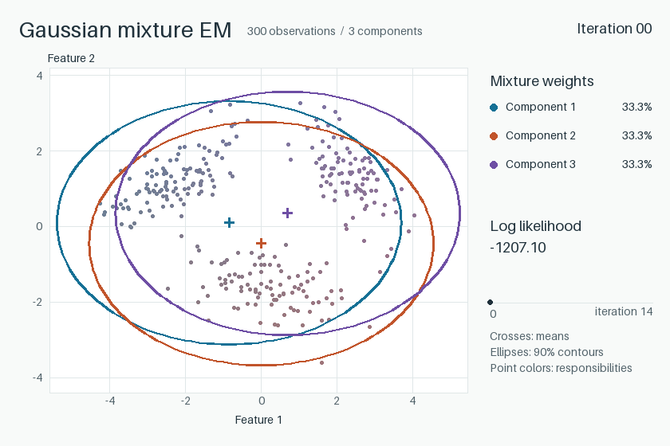
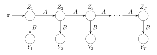
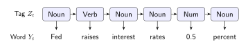

Hidden Markov models
We will mainly follow Chapter 5, “Inference for Markov Models,” from Random Processes for Engineers, adding examples from the lecture slides.
Basics of estimation theory
What is estimation? Suppose a parameter \(\theta\) is to be estimated from a random variable \(Y\). An estimator of \(\theta\) is a function \(\hat{\theta}\) that gives the estimate \(\hat{\theta}(y)\) for each observed value \(y\).
Two views: ML and Bayes
Definition 1 (maximum likelihood). Suppose the distribution of \(Y\) is known for each admissible parameter \(\theta\). Fix the observed value \(y\). Its likelihood as a function of \(\theta\) and the corresponding maximum likelihood (ML) estimate are
ML can impose hard constraints by restricting the admissible values of \(\theta\). A Bayesian model can also express prior beliefs by giving the unknown quantity a probability distribution.
Definition 2 (Bayes estimator). Let \(Z\) be the quantity to estimate and \(Y\) the observation, with a known joint distribution. Let \(C(z,\hat z)\) be the cost of reporting \(\hat z\) when the true value is \(z\). A Bayes estimator \(\hat Z=g^*(Y)\) minimizes the average cost over estimation rules \(g\):
The prior is the distribution of \(Z\) before observing \(Y\). The posterior is the conditional distribution of \(Z\) given \(Y=y\). For discrete \(Z\), their probability mass functions are \(p_Z(z)\) and \(p_{Z\mid Y}(z\mid y)\). For jointly continuous \(Z,Y\), their densities are \(f_Z(z)\) and \(f_{Z\mid Y}(z\mid y)\).
MMSE and MAP estimators
Under squared-error loss, the minimum mean squared error (MMSE) estimate is the posterior mean:
For discrete \(Z\), zero-one loss \(C(z,\hat z)=\mathbf 1_{\{z\ne\hat z\}}\) assigns unit cost to an incorrect estimate. Given \(Y=y\), reporting \(z\) has expected cost \(1-p_{Z\mid Y}(z\mid y)\). Minimizing this cost gives the maximum a posteriori (MAP) estimate:
Returning to the parameter notation, let \(\Theta\) and \(Y\) be discrete random variables. For an observation with \(p_Y(y)>0\), Bayes' rule gives
Here \(p_Y(y\mid\theta)\) denotes the likelihood under \(\Theta=\theta\). With \(y\) fixed, the denominator \(p_Y(y)\) is constant across candidate values of \(\theta\), so (5) gives
Recall that the maximum likelihood estimate satisfies
If the prior is uniform over the admissible parameter values, its factor is constant too. MAP and ML then have the same maximizers.
For jointly continuous \(\Theta\) and \(Y\), the MAP estimate maximizes the posterior density:
The expectation-maximization algorithm
The expectation-maximization (EM) algorithm is an iterative method for maximum-likelihood estimation in models with latent variables.
Notation.
- \(\theta\) is the parameter to estimate. \(\theta^{(k)}\) is its value at iteration \(k\).
- \(X\) is the complete data. Its probability mass function \(p_{\mathrm{cd}}(x\mid\theta)\) is specified for each \(\theta\).
- \(Y=h(X)\) is the observed random vector, and \(y\) is its observed value. Write \(\mathcal F_y=\{x:h(x)=y\}\) for all complete-data values consistent with \(y\).
- When \(X=(Y,Z)\), \(Z\) denotes the unobserved component. In this case \(h(y,z)=y\), so summing over \(\mathcal F_y\) amounts to summing over \(z\) with \(y\) fixed.
The observed-data likelihood is the total probability of the complete-data values that yield \(y\):
In some applications, there can be a very large number of terms in (9), making direct numerical maximization of \(p(y\mid \theta)\) with respect to \(\theta\) computationally infeasible (i.e., infeasible to compute \(\hat{\theta}_{\text{ML}}(y)\)).
Algorithm: Expectation-maximization
An observation \(y\) is given, along with an initial estimate \(\theta^{(0)}\).
(Expectation step) Compute \(Q(\theta\mid\theta^{(k)})\) for all \(\theta\), where
(Maximization step) Compute \(\theta^{(k+1)}\in\arg\max_{\theta} Q(\theta\mid\theta^{(k)})\).
A common source of confusion is the different roles of \(\theta\) and \(\theta^{(k)}\): the posterior weights are computed using \(\theta^{(k)}\), while the complete-data log-likelihood is evaluated at \(\theta\).
Convergence of the EM algorithm
Suppose that the complete data pmf can be factored as
Assume the following conditions hold:
- The map \(\theta\mapsto\log p(y\mid\theta)\) is differentiable.
- For every \(\bar\theta\), the conditional expectation \(\mathbb E[\log k(X\mid y,\bar\theta)\mid y,\bar\theta]\) is finite.
- For each fixed \(\theta\), the map \(\theta'\mapsto D\!\left(k(\cdot\mid y,\theta)\,\|\,k(\cdot\mid y,\theta')\right)\) is differentiable.
- For each fixed \(\theta'\), the map \(\theta\mapsto D\!\left(k(\cdot\mid y,\theta)\,\|\,k(\cdot\mid y,\theta')\right)\) is continuous.
If \(p(y\mid\theta^{(0)})>0\), the EM iterates satisfy \(p(y\mid\theta^{(k+1)})\ge p(y\mid\theta^{(k)})\) for every \(k\). Every limit point \(\theta^*\) of the parameter sequence is stationary for the likelihood:
Here we only prove the nondecreasing part. Using the factorization
for \(x \in \mathcal{F}_{y}\),
Notice that the last term \(\mathbb{E}\left[\log k(X \mid y, \theta^{(k)}) \middle| y, \theta^{(k)} \right]\) is constant with respect to \(\theta\). The maximization step is equivalent to:
Therefore,
Example: Gaussian mixture model
An observed random vector \(Y\in\mathbb R^d\) follows a mixture of \(J\) Gaussian distributions. Let \(Z\in\{1,\ldots,J\}\) be the unobserved component label. The parameter is \(\theta=(\pi,\mu,\Sigma)\), where
- \(\pi=(\pi_1,\ldots,\pi_J)\) contains the mixing weights. \(\pi_j=P(Z=j)\)
- \(\mu=(\mu_1,\ldots,\mu_J)\) contains the component means. \(\mu_j=\mathbb E[Y\mid Z=j]\in\mathbb R^d\).
- \(\Sigma=(\Sigma_1,\ldots,\Sigma_J)\) contains the component covariance matrices. \(\Sigma_j=\operatorname{Cov}(Y\mid Z=j) \in \mathbb{R}^{d \times d}.\)
Thus \(Y\mid Z=j\sim\mathcal N(\mu_j,\Sigma_j), Z \sim \text{Categorical}(\pi)\). Next, we derive the EM algorithm steps in an attempt to compute the maximum likelihood estimate of \(\theta\) given independent observations \(y^{(1)}, y^{(2)}, \dots, y^{(n)}\).
Let \(X = (Z^{(1)}, Y^{(1)}, Z^{(2)}, Y^{(2)}, \dots, Z^{(n)}, Y^{(n)})\). Then we have
For \(i=1,\ldots,n\) and \(j=1,\ldots,J\), define:
Let \(y=(y^{(1)},\ldots,y^{(n)})\) denote the observed sample. Only the component indicators are random:
Keep track of what is being conditioned on and which variables the expectation is taken over. Confusing the two can lead to incorrect updates and make the optimization unnecessarily difficult.
In the M-step,
Both maximizations use the GMM constraints \(\pi_j\ge 0\), \(\sum_{j=1}^{J}\pi_j=1\), and \(\Sigma_j\succ 0\) for each component.
-
Mixing weights update
\[ \boxed{\pi_j^{(k+1)}=\frac{1}{n}\sum_{i=1}^{n}r_{ij}^{(k)}.} \tag{22} \]
Matrix Cookbook identities used below
For fixed vectors \(a,b\) and matrix \(B\), the vector and matrix gradients are
Here \(X^{-\top}=(X^{-1})^\top\). For a positive-definite covariance matrix, \(\Sigma_j^{-\top}=\Sigma_j^{-1}\). Petersen and Pedersen, The Matrix Cookbook, 2012, pp. 9–11
-
Mean update
\[ \nabla_{\mu_j}Q =\Sigma_j^{-1}\sum_{i=1}^{n}r_{ij}^{(k)}(y^{(i)}-\mu_j). \tag{23} \]Set this gradient to zero and multiply by \(\Sigma_j\).
\[ \boxed{\mu_j^{(k+1)}=\frac{\sum_{i=1}^{n}r_{ij}^{(k)}y^{(i)}}{\sum_{i=1}^{n}r_{ij}^{(k)}}.} \tag{24} \] -
Covariance update
\[ \nabla_{\Sigma_j}Q =-\frac12\left(\sum_{i=1}^{n}r_{ij}^{(k)}\right)\Sigma_j^{-1} +\frac12\Sigma_j^{-1} \left(\sum_{i=1}^{n}r_{ij}^{(k)}(y^{(i)}-\mu_j^{(k+1)})(y^{(i)}-\mu_j^{(k+1)})^\top\right)\Sigma_j^{-1}. \tag{25} \]Set the gradient to zero and multiply on both the left and the right by \(\Sigma_j\).
\[ \boxed{\Sigma_j^{(k+1)} =\frac{\displaystyle\sum_{i=1}^{n}r_{ij}^{(k)} (y^{(i)}-\mu_j^{(k+1)})(y^{(i)}-\mu_j^{(k+1)})^\top} {\displaystyle\sum_{i=1}^{n}r_{ij}^{(k)}}.} \tag{26} \]
NumPy implementation
import numpy as np
from numpy.typing import NDArray
FloatArray = NDArray[np.float64]
def gmm_em(
Y: FloatArray, # (n, d)
pi_init: FloatArray, # (J,)
mu_init: FloatArray, # (J, d)
sigma_init: FloatArray, # (J, d, d)
max_iter: int = 100,
tol: float | None = None,
reg_covar: float = 0.0,
) -> tuple[FloatArray, FloatArray, FloatArray, FloatArray, FloatArray]:
"""Fit a full-covariance GMM using EM.
tol=None runs exactly max_iter iterations. Otherwise, stop when
the absolute change in total observed-data log-likelihood is < tol.
max_iter must be nonnegative; tol, if supplied, must be positive;
reg_covar must be nonnegative.
Returns:
pi: (J,) mixing weights.
mu: (J, d) means.
Sigma: (J, d, d) covariances.
r: (n, J) responsibilities under the returned parameters.
loglik: (t + 1,) log-likelihoods, including initialization,
where t is the number of completed EM iterations.
"""
n, d = Y.shape
J = pi_init.shape[0]
pi = np.array(pi_init, dtype=np.float64, copy=True) # (J,)
mu = np.array(mu_init, dtype=np.float64, copy=True) # (J, d)
Sigma = np.array(sigma_init, dtype=np.float64, copy=True) # (J, d, d)
eye = np.eye(d, dtype=np.float64) # (d, d)
def e_step(
weights: FloatArray, # (J,)
means: FloatArray, # (J, d)
covs: FloatArray, # (J, d, d)
) -> tuple[FloatArray, float]:
log_joint = np.empty((n, J), dtype=np.float64) # (n, J)
for j in range(J):
L = np.linalg.cholesky(covs[j]) # (d, d)
diff = Y - means[j] # (n, d)
z = np.linalg.solve(L, diff.T) # (d, n)
mahal = np.sum(z * z, axis=0) # (n,)
log_det = 2.0 * np.log(np.diag(L)).sum()
log_joint[:, j] = np.log(weights[j]) - 0.5 * (
d * np.log(2.0 * np.pi) + log_det + mahal
)
# Stable log(sum_j pi_j * N(y_i | mu_j, Sigma_j)).
shift = log_joint.max(axis=1, keepdims=True) # (n, 1)
log_density = shift + np.log(
np.exp(log_joint - shift).sum(axis=1, keepdims=True)
) # (n, 1)
responsibilities = np.exp(log_joint - log_density) # (n, J)
return responsibilities, float(log_density.sum())
r, ll = e_step(pi, mu, Sigma)
history: list[float] = [ll]
for _ in range(max_iter):
# M-step: keep r fixed throughout all three updates.
counts = r.sum(axis=0) # (J,)
pi = counts / n # (J,)
mu = (r.T @ Y) / counts[:, None] # (J, d)
diff = Y[None, :, :] - mu[:, None, :] # (J, n, d)
Sigma = np.einsum(
"jn,jnd,jne->jde", r.T, diff, diff
) / counts[:, None, None] # (J, d, d)
Sigma += reg_covar * eye # (J, d, d)
# E-step under the updated parameters.
r, ll = e_step(pi, mu, Sigma)
history.append(ll)
if tol is not None and abs(history[-1] - history[-2]) < tol:
break
loglik = np.asarray(history, dtype=np.float64) # (t + 1,)
return pi, mu, Sigma, r, loglik
Two-dimensional example

Hidden Markov Models
A hidden Markov model describes a sequence of observations generated by a latent Markov chain. We will see an example of an HMM applied to part-of-speech tagging.
Notation. Let \(T\ge 1\) be the number of observation times. The complete data are \(X=(Y,Z)\).
- \(Z=(Z_1,\ldots,Z_T)\) is the hidden, time-homogeneous Markov chain. Each \(Z_t\) takes values in the state space \(\mathcal{S}\), with \(N_s=|S|\).
- \(Y=(Y_1,\ldots,Y_T)\) is the observed sequence. Each \(Y_t\) takes one of \(N_o\) possible values. Given the entire state sequence \(Z=z\), the observations are conditionally independent, and the distribution of \(Y_t\) depends only on \(z_t\).
The HMM parameter is \(\boxed{\theta=(\pi,A,B)}\).
| Parameter | Meaning | Entries |
|---|---|---|
| \(\pi\) | Initial distribution on \(S\) | \(\pi_i=P(Z_1=i)\) |
| \(A=(a_{ij})\in\mathbb R^{N_s\times N_s}\) | One-step transition matrix | \(a_{ij}=P(Z_{t+1}=j\mid Z_t=i)\) |
| \(B=(b_{i\ell})\in\mathbb R^{N_s\times N_o}\) | Observation generation matrix | \(b_{i\ell}=P(Y_t=\ell\mid Z_t=i)\) |

The pmf of the complete data, for a given choice of \(\theta\), is
We consider the following three estimation tasks:
- Given the observed data \(y_{1: T}\) and \(\theta\), compute the conditional distribution of state \(z\).
- Given the observed data \(y_{1 : T}\) and \(\theta\), compute the most likely hidden state sequence \(z_{1: T}\).
- Given the observed data \(y_{1:T}\), compute the maximum likelihood estimate of \(\theta\).
Posterior state probabilities and the forward-backward algorithm
In this section, we aim to provide an efficient way to compute
and
For each \(i\in\mathcal S\) and \(1\le t\le T\), define the forward variable \(\alpha_i(t)\) and the backward variable \(\beta_i(t)\) by
At the endpoints, \(\alpha_i(1)=\pi_i b_{i y_1}\) and \(\beta_i(T)=1\). We leave the derivation of the recurrences for \(\alpha, \beta\) to the reader. Next, we see how \(\alpha, \beta\) help to find the two probabilities we want.
Note that
We can derive the conditional distribution of the state at time \(t\), given all the observations:
From the above, for any \(i\) such that \(\gamma_{i}(t) > 0\),
Similarly,
From this, we derive the conditional distribution of a pair of states at consecutive times \(t\) and \(t+1\), given all observations:
where the final expression is derived using (33).
Algorithm (Forward-backward). Given the observations \(y_{1:T}\) and parameters \(\theta=(\pi,A,B)\), make two passes over the sequence.
-
Forward pass. Initialize \(\alpha_i(1)=\pi_i b_{i y_1}\) for each \(i\in\mathcal S\). For \(t=1,\ldots,T-1\), compute
\[ \alpha_j(t+1)=\sum_{i\in\mathcal S}\alpha_i(t)a_{ij}b_{j y_{t+1}}. \tag{36} \] -
Backward pass. Initialize \(\beta_i(T)=1\) for each \(i\in\mathcal S\). For \(t=T,T-1,\ldots,2\), compute
\[ \beta_i(t-1)=\sum_{j\in\mathcal S}a_{ij}b_{j y_t}\beta_j(t). \tag{37} \] -
Compute the posteriors.
\[ \begin{align} P(Z_t=i\mid Y_{1:t}=y_{1:t},\theta) &=\frac{\alpha_i(t)}{\sum_{j\in\mathcal S}\alpha_j(t)}, \tag{38}\\ \gamma_i(t)\triangleq P(Z_t=i\mid Y_{1:T}=y_{1:T},\theta) &=\frac{\alpha_i(t)\beta_i(t)}{\sum_{j\in\mathcal S}\alpha_j(t)\beta_j(t)}. \tag{39} \end{align} \]\[ \begin{align} \xi_{ij}(t) &\triangleq P(Z_{t}=i,Z_{t+1}=j \mid Y_{1}=y_{1},\dots,Y_{T}=y_{T},\theta) \notag\\ &= \frac{\alpha_i(t)a_{ij}b_{j y_{t+1}}\beta_j(t+1)} {\displaystyle\sum_{u,v\in\mathcal S}\alpha_u(t)a_{uv}b_{v y_{t+1}}\beta_v(t+1)} \tag{40}\\ &= \frac{\gamma_{i}(t)a_{ij}b_{jy_{t+1}}\beta_{j}(t+1)}{\beta_{i}(t)}. \tag{41} \end{align} \]
Most likely state sequence: Viterbi algorithm
Suppose the parameter \(\theta = (\pi, A, B)\) is known, and that \(Y = (Y_{1},\dots,Y_{T})\) is observed as \(y=(y_{1},\dots,y_{T})\). We seek the MAP estimate \(\hat{Z}_{\text{MAP}}(y,\theta)\) of the entire state sequence \(Z=(Z_{1},\dots,Z_{T})\) given \(Y=y\).
We use dynamic programming and define the variables
We leave the derivation of the recurrence to the reader.
Algorithm (Viterbi). Compute the \(\delta\)'s and associated back pointers by a recursion forward in time:
Then \(z^* = \hat{Z}_{\text{MAP}}(y,\theta)\) satisfies \(p_{\text{cd}}(y, z^*\mid \theta)=\max_{i}\delta_{i}(T)\), and \(z^*\) is given by tracking backward in time:
The Baum-Welch algorithm, or EM algorithm for HMMs
The parameter to be estimated is \(\theta = (\pi, A, B)\). The complete data consist of \((Y, Z)\), and the observed data are \(Y\). The initial parameter \(\theta^{(0)}=(\pi^{(0)}, A^{(0)}, B^{(0)})\) should have all entries strictly positive.
To compute \(Q(\theta \mid \theta^{(k)})\), taking logarithms in the expression (27) for the pmf of the complete data yields
Taking the expectation yields
where the variables \(\gamma_{i}(t)\) and \(\xi_{ij}(t)\) are defined using the model with parameter \(\theta^{(k)}\) according to (39) and (41).
Rewrite \(Q(\theta \mid \theta^{(k)})\) for easier optimization:
We skip the exact derivation. The maximization step of the EM algorithm gives:
Example: Part-of-speech tagging
Part-of-speech (POS) tagging assigns a grammatical category to each token in a sentence, using its context. In the lecture's sentence, raises is a verb and interest is a noun. In the HMM, \(Y_t\) is the observed word and \(Z_t\) is its tag.

Given a trained model, Viterbi finds the most likely tag sequence for a new sentence. An HMM can be trained on untagged text and then used to generate text.
Supervised training
When every training word has a known tag, the maximum likelihood estimates are normalized counts. Let \(M\) be the number of sentences, and let \(\#\) count occurrences across the corpus. Count transitions only within a sentence.
Unsupervised training
With only the words observed, the likelihood of a sentence sums over all possible tag sequences. For a sentence of length \(T\), the objective is
For independent sentences, add their log likelihoods. The Baum-Welch algorithm is EM for this objective.
References
- Bruce Hajek. Random Processes for Engineers. Cambridge University Press, 2015. Chapter 5, “Inference for Markov models.”
- Kaare Brandt Petersen and Michael Syskind Pedersen. The Matrix Cookbook. Version: November 15, 2012. Section 2, “Derivatives.”
- Tianxing He. Natural Language Processing, Part I. Lecture slides, Institute for Interdisciplinary Information Sciences (IIIS), Tsinghua University.